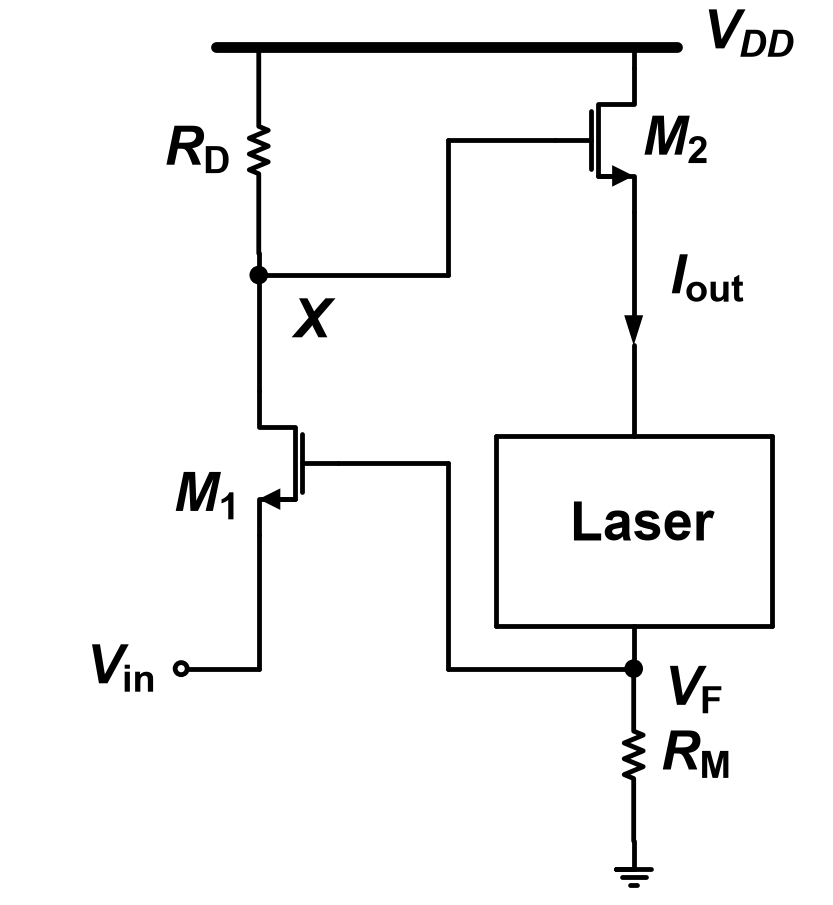

P1. CG와 소스 팔로워로 레이저 전류를 조절하는 C-V 귀환
주어진 조건
- $R_M$은 작지 않다고 가정
- laser diode의 임피던스는 $R_L$
- $\lambda = 0$으로 가정
- 소자 값($R_D$, $R_M$, $R_L$, $V_{DD}$, 트랜지스터 크기)은 주어지지 않음
구할 것
- (1) Loop gain과 closed-loop gain을 각각 구함
- (2) Closed-loop input impedance와 closed-loop output impedance를 각각 구함

원문 보기
다음 회로에서 $R_M$은 작지 않다고 가정하며, laser diode의 임피던스는 $R_L$이다. $\lambda = 0$으로 가정한다.
(1) Loop gain과 closed-loop gain을 각각 구하시오.
(2) Closed-loop input impedance와 closed-loop output impedance를 각각 구하시오.
문제를 읽어요
입력은 전압 $V_{in}$이고 $M_1$의 소스로 들어가요. $M_1$의 게이트는 $V_F$ 노드에 묶여 있으니, 신호 입장에서 $M_1$은 소스로 입력을 받는 공통 게이트(common-gate, CG) 단이에요. 드레인 노드 $X$에는 $R_D$가 달려 있어요.
$X$는 NMOS $M_2$의 게이트를 움직여요. $M_2$는 드레인이 $V_{DD}$, 소스가 레이저 쪽이므로 소스 팔로워(source follower)예요. $M_2$의 소스 전류가 레이저($R_L$)와 $R_M$을 차례로 지나 접지로 가요. 출력은 레이저 전류 $I_{out}$이에요.
$R_M$ 위의 전압 $V_F=I_{out}R_M$이 $M_1$ 게이트로 돌아가요. 출력 전류를 감지(sense)해서 전압으로 되돌리는(return) 구조라 전류-전압(C-V) 귀환이에요.
조건 $\lambda=0$은 모든 트랜지스터의 $r_o\to\infty$라는 뜻이에요. “$R_M$이 작지 않다”는 말은 $R_M$을 무시하지 말고 개루프 회로에 로딩(loading)으로 넣으라는 신호예요. 몸체 효과는 원문에 없으므로 수업 기본대로 무시해요.
(1)은 루프 이득과 폐루프 이득 $I_{out}/V_{in}$을, (2)는 $V_{in}$ 쪽에서 본 폐루프 입력 임피던스와 레이저 쪽에서 본 폐루프 출력 임피던스를 구해요. 출력 임피던스는 레이저를 떼어 낸 두 단자에서 구동 회로를 들여다본 값으로 정의해요. 레이저는 이 회로가 전류를 밀어 넣는 부하이기 때문이에요.
이 개념과 공식을 떠올려요
단서 → 개념. “$R_M$이 작지 않다”와 “루프 이득·폐루프 임피던스”라는 요구에서 귀환망의 로딩을 넣는 2포트 해석(Razavi 12장의 종지 법칙, termination rule)을 떠올려요. 루프를 끊을 때 귀환망을 두 번 복제해요. 출력 쪽에 붙는 것이 감지 복제, 입력 쪽에 붙는 것이 반송 복제예요.
남는 포트 처리. 원래 회로에서 직렬로 끼어 있던 포트는 개방하고, 병렬로 걸려 있던 포트는 단락해요. 이 회로는 출력 전류가 $R_M$을 직렬로 지나가므로 반송 복제의 감지 포트를 개방해요. 또 $V_F$가 $M_1$의 게이트-소스 사이에서 $V_{in}$과 직렬로 비교되므로 감지 복제의 반송 포트도 개방해요.
기호의 뜻. $A=I_{out}/V_{in}$은 개루프 트랜스컨덕턴스(단위 S)예요. 귀환율 $K$는 교과서 Fig 12.54에서 $V_2/I_1$로 쓰지만, 여기서는 원 회로 기호 그대로 $K=V_F/I_{out}$(단위 Ω)로 바로 적어요. 루프 이득 $T=KA$는 단위가 없고, 폐루프 이득은 $A/(1+T)$예요.
임피던스 규칙. 입력에서 전압으로 직렬 비교하면 $R_{in}$이 $(1+T)$배, 출력에서 전류를 직렬로 감지하면 $R_{out}$도 $(1+T)$배가 돼요. 이 곱에 쓰는 $T$는 출력 임피던스를 재는 조건(레이저 자리를 시험원으로 바꾼 상태)에서의 루프 이득이어야 해요.
알려진 블록. $\lambda=0$인 CG 단의 입력 저항은 $1/g_{m1}$, 전압이득은 $g_{m1}R_D$예요. 소스 팔로워에 총 부하 저항 $R$이 걸리면 전압이득이 $R/(1/g_{m2}+R)$이고 옴의 법칙 $I_{out}/V_{out}=1/R$을 곱해 연립방정식 없이 바로 $I_{out}/V_X$를 얻어요. 감지 복제 $R_M$이 $R_L$과 직렬로 붙으므로 $R_L\to R_L+R_M$으로 치환해 적용해요.
종이에 쓸 첫 줄
반송 복제는 감지 포트가 개방이라 $R_M$에 전류가 흐르지 않아요. 따라서 $M_1$ 게이트는 $R_M$을 거쳐 접지에 붙은 AC 0 V가 돼요. 감지 복제는 반송 포트가 개방이라 레이저 아래에 $R_M$만 접지로 남아요.
개루프 이득은 중간 노드 $X$를 거치는 연쇄 곱으로 쓰고, 귀환율은 $R_M$ 하나에서 바로 읽어요.
$$A=\frac{I_{out}}{V_{in}}=\frac{V_X}{V_{in}}\cdot\frac{I_{out}}{V_X}$$ $$K=\frac{V_F}{I_{out}}=R_M$$이렇게 풀어요
(1) 루프 이득과 폐루프 이득
1단은 소스 입력 CG예요. 입력은 $V_{in}$, 출력은 노드 $X$의 전압이에요. $G_m$과 $R_{out}$을 따로 구해 곱해요.
$X$를 접지에 단락하고, $X$에서 $M_1$ 드레인으로 빨려 들어가는 전류를 $i_{out}$의 양의 방향으로 잡아요. 게이트가 AC 0이므로 $v_{gs1}=0-v_{in}$이에요.
$$i_{out}=g_{m1}(0-v_{in})$$ $$G_{m1}=\frac{i_{out}}{v_{in}}=-g_{m1}$$$V_{in}=0$으로 두면 $M_1$은 $\lambda=0$인 전류원이라 무한대 저항이고, $M_2$ 게이트로는 전류가 흐르지 않아요. $X$에서는 $R_D$만 보여요.
$$R_{out1}=R_D$$$i_{out}$을 증폭기로 빨려 들어가는 방향으로 잡았으니 $V_X=-i_{out}R_{out1}$이에요.
$$\frac{V_X}{V_{in}}=-G_{m1}R_{out1}=g_{m1}R_D$$$M_2$ 소스 전압을 $V_S$라 두면, $R_M$이 없을 때 소스 팔로워 전압이득 $\frac{V_S}{V_X}=\frac{R_L}{1/g_{m2}+R_L}$에 옴의 법칙 $\frac{I_{out}}{V_S}=\frac{1}{R_L}$을 곱해 $R_L$이 약분돼요. 감지 복제 $R_M$이 $R_L$과 직렬로 붙었으므로 $R_L\to R_L+R_M$으로 치환해 바로 계산해요.
$$\frac{I_{out}}{V_X}=\frac{V_S}{V_X}\cdot\frac{I_{out}}{V_S}=\frac{R_L+R_M}{1/g_{m2}+R_L+R_M}\cdot\frac{1}{R_L+R_M}=\frac{1}{1/g_{m2}+R_L+R_M}$$ $$A=\frac{V_X}{V_{in}}\cdot\frac{I_{out}}{V_X}=\frac{g_{m1}R_D}{1/g_{m2}+R_L+R_M}$$폐루프에서는 $v_{gs1}=V_F-V_{in}=-(V_{in}-V_F)$예요. 개루프의 $A$를 $V_F=0$일 때 정했으므로, 귀환이 있으면 입력 자리에 $V_{in}-V_F$가 들어가요. 그래서 $I_{out}=A(V_{in}-KI_{out})$이고 음의 귀환이에요. 폐루프 이득은 개루프 이득의 $\frac{1}{1+T}$배예요.
$$T=KA=\frac{g_{m1}R_DR_M}{1/g_{m2}+R_L+R_M}$$ $$\frac{I_{out}}{V_{in}}=\frac{A}{1+T}=\frac{g_{m1}R_D}{1/g_{m2}+R_L+R_M+g_{m1}R_DR_M}$$(2) 폐루프 입력·출력 임피던스
개루프에서 $V_{in}$은 게이트가 접지된 CG의 소스를 보므로 $R_{in,open}=1/g_{m1}$이에요. 입력에서 전압을 직렬로 비교하니 개루프의 $(1+T)$배가 돼요. 이때 $T$는 레이저가 실제로 달린 (1)의 루프 이득이에요.
$$R_{in,closed}=\frac{1}{g_{m1}}(1+T)=\frac{1}{g_{m1}}\left(1+\frac{g_{m1}R_DR_M}{1/g_{m2}+R_L+R_M}\right)$$레이저를 떼고 그 두 단자에서 봐요. 개루프에서는 $V_{in}=0$이고 $M_1$ 게이트도 0이라 $X$가 교류 접지로 고정돼요. 위 단자에서 $M_2$ 소스로 보이는 $1/g_{m2}$는 고정된 $X$를 통해 교류 접지로, 아래 단자의 $R_M$도 접지로 내려가요. 두 저항이 같은 교류 접지로 한 고리에 이어지므로 곧바로 직렬 합이에요.
$$R_{out,open}=\frac{1}{g_{m2}}+R_M$$출력 임피던스를 잴 때는 레이저 자리에 시험원이 들어가므로 루프 안에 $R_L$이 없어요. 그래서 곱하는 $(1+T_0)$배의 루프 이득은 (1)의 $T$에서 $R_L=0$으로 둔 $T_0$예요.
$$T_0=\frac{g_{m1}R_DR_M}{1/g_{m2}+R_M}$$ $$R_{out,closed}=R_{out,open}(1+T_0)=\frac{1}{g_{m2}}+R_M+g_{m1}R_DR_M$$완성 답과 검산
(1) 검산
루프 이득 $T=\dfrac{g_{m1}R_DR_M}{1/g_{m2}+R_L+R_M}$, 폐루프 이득 $\dfrac{I_{out}}{V_{in}}=\dfrac{g_{m1}R_D}{1/g_{m2}+R_L+R_M+g_{m1}R_DR_M}$예요. 조건은 $\lambda=0$, 몸체 효과 무시예요.
단위: $g_{m1}R_D$는 단위가 없고 분모는 Ω이라 이득은 S예요. $T$는 단위가 없어요.
강한 귀환: $T\gg1$이면 $I_{out}/V_{in}\to1/K=1/R_M$이에요. $V_F$가 $V_{in}$을 따라가서 $I_{out}\approx V_{in}/R_M$이 된다는 뜻이라, 레이저 전류가 $R_L$에 거의 무관해져요.
귀환 제거: $R_M\to0$이면 $T\to0$이고 이득은 $g_{m1}R_D/(1/g_{m2}+R_L)$로, 귀환 없는 CG+팔로워 직렬 연결로 돌아가요.
(2) 검산
$R_{in,closed}=\dfrac{1+T}{g_{m1}}$, 레이저에서 본 $R_{out,closed}=\dfrac{1}{g_{m2}}+R_M+g_{m1}R_DR_M$예요. 출력 임피던스를 레이저까지 포함한 출력 루프 전체로 정의하면 여기에 $R_L$을 더해요.
직접 확인: 문제 그림에서 레이저 자리에 $I_{out}$ 방향의 시험전류 $I_t$를 흘리고 $V_{in}=0$으로 둬요. $V_F=R_MI_t$이고, $M_1$ 게이트가 올라가니 $V_X=-g_{m1}R_DR_MI_t$예요. $M_2$ 소스는 $V_X-I_t/g_{m2}$이므로 두 단자 전압차는 $I_t(1/g_{m2}+R_M+g_{m1}R_DR_M)$이에요. 위 결과와 같아요.
다른 정의와의 연결: 루프에 $R_L$을 넣은 채 (1)의 $T$를 쓰면 출력 루프 전체 임피던스는 $(1/g_{m2}+R_L+R_M)(1+T)=1/g_{m2}+R_L+R_M+g_{m1}R_DR_M$이에요. 여기서 $R_L$을 빼면 같은 답이 나오고, 레이저에서 본 값은 $R_L$에 무관해요.
극한: $R_M\to0$이면 $R_{in}\to1/g_{m1}$, $R_{out}\to1/g_{m2}$로 귀환 없는 값이에요.
주의할 점
- $R_M$이 작지 않은데 개루프에서 레이저 아래 $R_M$을 빼면 $A$가 커지고 $T$도 틀려요. 감지 복제 $R_M$은 레이저와 직렬로 남아요.
- 개루프에서 $M_1$ 게이트를 $V_F$에 그대로 두면 루프가 끊기지 않아요. 반송 복제의 $R_M$에는 전류가 없으니 게이트는 AC 0이에요.
- CG라서 $V_X/V_{in}=+g_{m1}R_D$로 양수예요. 귀환 신호는 $V_{in}-V_F$ 꼴로 빠지므로 $K=+R_M$, $T\gt0$이에요.
- $R_{out,open}$(레이저 제외)에 레이저를 포함한 $T$를 곱하면 $R_L\ll1/g_{m2}+R_M$일 때만 근사적으로 맞아요. 이 회로는 $R_L$이 $1/g_{m2}$, $R_M$과 비슷할 수 있어 차이가 커요.
조건을 바꾸어 생각해요
- 강한 귀환($T\gg1$)에서 $R_M$을 두 배로 키우면 $I_{out}/V_{in}$은 어떻게 변하나요?
- $M_1$ 게이트를 $V_F$ 대신 고정 바이어스에 연결하면 $V_{in}$에서 본 입력 임피던스는 얼마인가요?
- 레이저를 다른 소자로 바꿔 $R_L$이 두 배가 되면, 레이저에서 본 $R_{out,closed}$와 폐루프 이득 중 무엇이 바뀌나요?
$R_M$이 작지 않으면 $R_M$ 복제를 넣은 개루프에서 연쇄 곱과 $R_L\to R_L+R_M$ 치환으로 풀어요.
이득
$K=V_F/I_{out}=R_M$이고 $A=g_{m1}R_D/(1/g_{m2}+R_L+R_M)$이에요.
폐루프 이득은 $A/(1+T)$이고 $T\gg1$이면 $1/R_M$에 다가가요.
임피던스
입력은 직렬 비교라 $(1+T)/g_{m1}$로 커져요.
레이저에서 본 출력은 $1/g_{m2}+R_M+g_{m1}R_DR_M$이에요.
출력 쪽 곱에는 레이저를 단락한 $T_0$를 써요.